Explore
Education
My academic path
I have completed highschool at a French institution in Lebanon, before joining Imperial College London in fall 2018 to pursue an MEng degree in Electronics and Information Engineering, where I enjoy learning about and bridging the gap between hardware and software, as well as explore low-level technologies and their implementations, from signal processing to compilers.
Work Experience
A continuous passion to learn
New technologies and innovations trigger my curiosity to explore new fields in hardware and software. This passion led me to continously seek experience from professionals through summer internships or spring weeks. Recently, I've founded a startup with two friends and currently dedicating most of my time for it.
Projects & Competitions
My involvements outside university
In 2014, my younger brother and I founded a robotics team from our bedroom and started competing in local FIRST competitions, making it to the World Festival in 2017 and 2018. I also regurarly attend hackathons and get involved into projects such as assitive mobile applications or a little BB8 robot.
Personal Interests
A taste of my daily activities
Beside a hunger for technology-related activites, I love to practice martial arts (I've been doing Shinkyokushin Karate for over 12 years now). I am also a big fan of spanish guitar, but recently got myself into fingerstyle accoustic covers. I manage to fit in a book every 2-3 weeks as well!
Strengths
Software Languages


 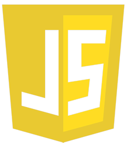
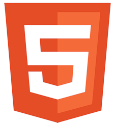
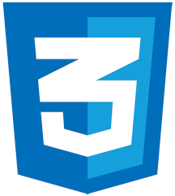
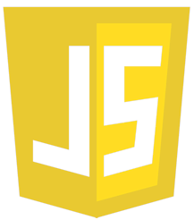
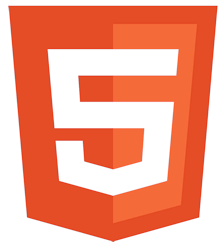
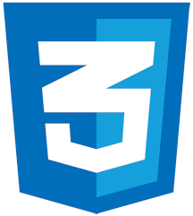
Software Frameworks & Environments
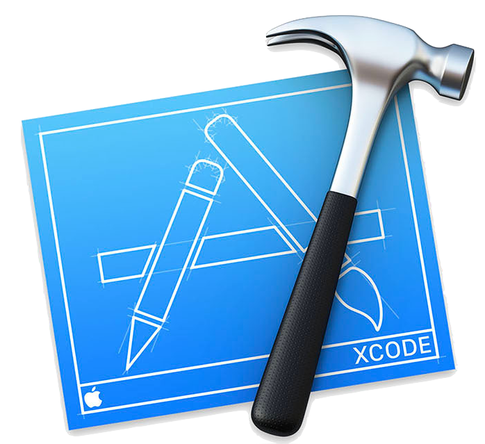


Hardware
 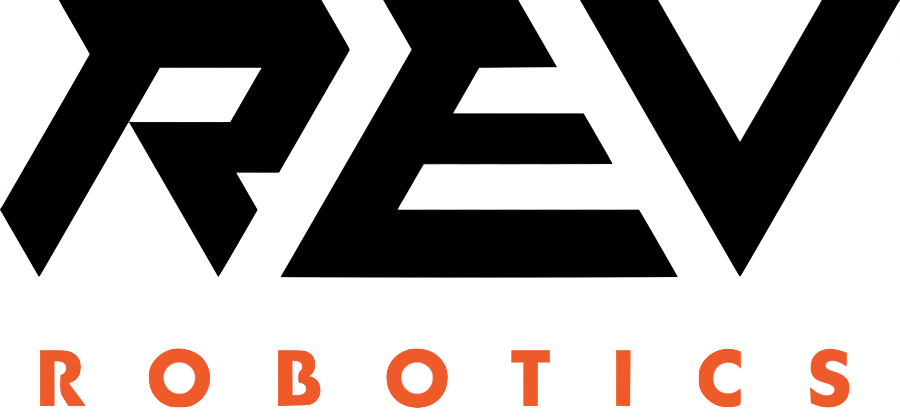
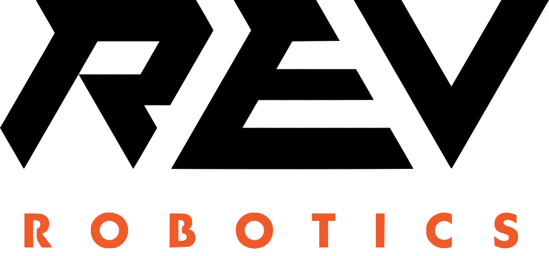
 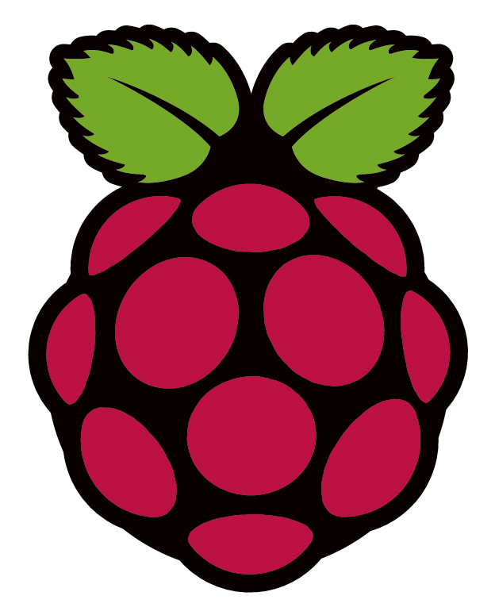
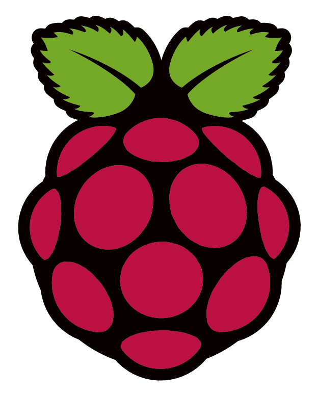

About
I'm Jaafar, a 20 y/o Lebanese student living in London. I've always been passionate about technology, starting with robotics at a young age and catching up software development in high-school. I love to invest time and resources to improve my skills everyday, and pour my best into projects to help developing our world for the better. Feel free to reach out for any collaborations!